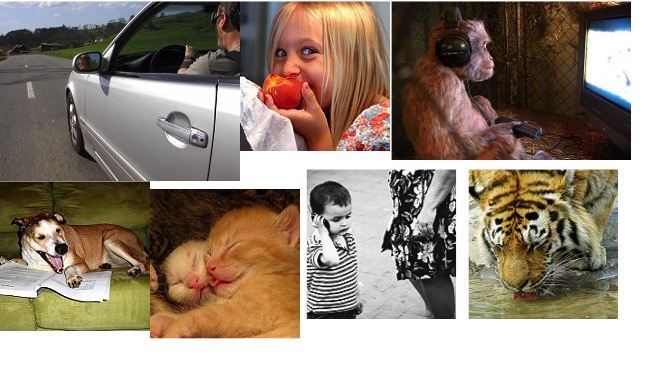

Matt Watson
SP 102 - The University of Alabama
01-27-16

El hombre... La niña... El niño... Los gatos... El tigre... El perro... El mono...
Instrucciones: En un grupo de dos, habla con tu compañero de quién es tu célebre favorito y qué están haciendo ahora mismo (right now)
Modelo: Persona A: ¿Quién es tu célebre favorito?
Persona B: Me gusta Leonardo DiCaprio, especialmente su película Aviator.
A: Y ¿qué está haciendo Leonardo DiCaprio ahora mismo?
B: Sospecho (I suspect) que Leo está conduciendo un carro muy costoso, porque tiene muchísimo dinero. Y a ti ¿qué célebre te gusta más?
B: ....